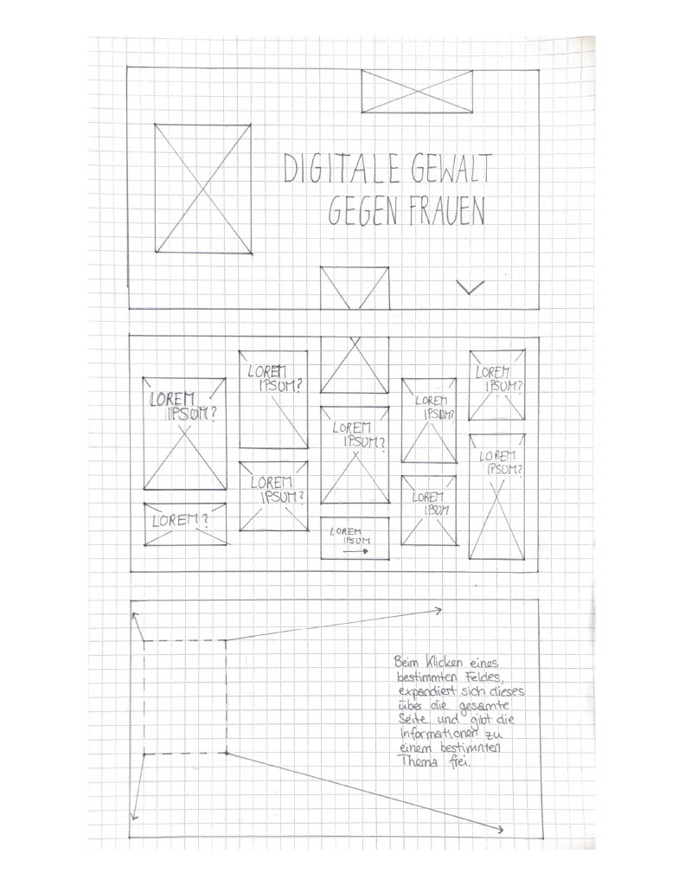

Am Anfang habe ich mir zunächst Gedanken gemacht was ich unter 'Interaktiven Infografik' verstehe. Mein erster Gedanke war eine klassische Informationsgrafik, wie man sie auf vielen Webseiten findet, die Informationen aus einer Statistik widergibt. Ich persönlich bin ein Fan von Infografiken die den User selber entscheiden lassen und bei denen man Informationen nach und nach selbst erkunden kann. Daran habe ich mich bei meiner Infografik orientriert.
Was die Informationen die auf meiner Infografik dargestellt werden sollen angeht, habe ich mich schnell für das Thema 'Digitale Gewalt gegen Frauen' entschieden, mit welchem ich mich persönlich zu dieser Zeit beschäftigt habe. Also habe ich zunächst die Informationen zu dem Thema zusammen getragen.
Die Entscheidung für das Format einer Webseite stand relativ schnell fest. Auf dieser sollte es Interaktionen in Form von Klicken und Scrollen geben. Meine grobe Idee habe ich versucht auf Papier darzustellen (siehe Zeichnung). Die Interkationen klar zu machen ist mir in dieser Form leider noch nicht ganz gelungen.
Mit Adobe XD habe ich mich schließlich daran gemacht einen Interaktiven Prototypen zu erstellen, bei dem ich vor allem auf Design und Minimalismus geachtet habe, da dass Faktoren sind auf die ich auch sehr achte. Die Webseite sollte auf einer Emotionalen Ebene ansprechen, dass Thema trotzdem nicht banalisieren. Deshalb habe ich mir vor allem bei der Farbgebung und der Entscheidung der Bilder gedanken gemacht. Das Design ist im ganzen sehr simple geworden, ist einfach und verständlich und erfüllt die Dinge die ich mir zum Ziel gemacht hatte.
Beim Testen mit meinen Kommiliton:innen wurde ich noch auf ein paar Gedankliche Lücken aufmerksam gemacht. So fehlte auf einer Unterseite die Möglichkeit zur Startseite zurück zu kehren. Ansonsten bin ich vor allem auf gutes Feedback gestoßen, was Design und Verständlichkeit angeht. Die Kleinigkeiten die noch korrigiert werden mussten, also die Möglichkeit auf das zurückkehren der Startseite und etwas schneller Animationen für kürzere Wartezeiten beim Seitenwechsel, habe ich dann umgesetzt.